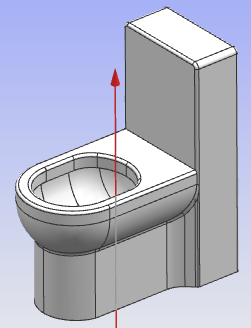

7.2马桶喷釉离线编程
7.2.1喷釉工艺分析
本例选择卫浴产品中较为复杂的坐便器作为加工对象，如图7-11本例使用的机器人型号为HSR-JR612，该机器人的控制器配备的是华数机器人控制器。为了使机器人能够一次加工到工件的大部分表面，在工件端安装轴线为Z方向的旋转变位机，使坐便器绕Z轴旋转。

图7-11 坐便器模型
要求：
1、利用喷涂机器人对坐便器进行施釉，要求对所有外侧可见面均匀施釉。
2、喷涂时，为了保证工件表面釉料均匀，喷枪距工件表面的距离控制在300±50mm内。
3、在空行程中，要求喷雾关闭，避免浪费釉料。
4、为了保证喷涂效率，要求喷枪速度不能低于500mm/s。
5、为了保证工件表面釉料的厚度，需要对工件喷涂两次。